getting-started.RmdMake sure the package is installed. See installation instructions here.
The PSID (public water system ID number) of a water system is the only mandatory argument to get_data(). Use the PSID of a system to get all the water quality data for that system.
For example, Alameda County Water District is PSID 0110001:
## Rows: 22,107
## Columns: 55
## $ PWSID <chr> "110001", "110001",…
## $ SAMP_DATE <dttm> 2015-07-20, 2015-0…
## $ SAMP_TIME <int> 910, 910, 910, 910,…
## $ LAB_NUM <int> 5401, 5401, 5401, 5…
## $ ANADATE <chr> "7/28/2015 0:00:00"…
## $ INDATE <chr> "8/12/2015 0:00:00"…
## $ METHOD <chr> "", "", "", "", "",…
## $ INBY <chr> "U", "U", "U", "U",…
## $ SPECIAL <chr> "S", "S", "S", "S",…
## $ STORE_NUM <chr> "00081", "00086", "…
## $ XMOD <chr> "<", "<", "", "", "…
## $ FINDING <dbl> 5.00, 1.00, 864.00,…
## $ CHEMICAL <chr> "COLOR", "ODOR THRE…
## $ AKA1 <chr> "COLOR, APPARENT (U…
## $ AKA2 <chr> NA, NA, NA, NA, NA,…
## $ CLS <chr> "T", "T", "T", "T",…
## $ RPT_CDE <chr> "GP", "GP", "GP", "…
## $ RPT_UNIT <chr> "UNITS", "TON", "US…
## $ MCL <dbl> 15, 3, 1600, 0, 0, …
## $ NL <dbl> 0, 0, 0, 0, 0, 0, 0…
## $ TRIGGER_AM <dbl> 15.0, 3.0, 900.0, 0…
## $ DLR <dbl> 0.0, 1.0, 0.0, 0.0,…
## $ PHG <int> 0, 0, 0, 0, 0, 0, 0…
## $ RPHL <int> 0, 0, 0, 0, 0, 0, 0…
## $ CHEM_SORT <chr> "COLOR", "ODOR THRE…
## $ `Water System Name` <chr> "ALAMEDA COUNTY WAT…
## $ `Principal County Served` <chr> "ALAMEDA", "ALAMEDA…
## $ `Federal Water System Type -CODE` <chr> "C", "C", "C", "C",…
## $ `Federal Water System Type` <chr> "Community", "Commu…
## $ `State Water System Type -CODE` <chr> "C", "C", "C", "C",…
## $ `State Water System Type` <chr> "Community", "Commu…
## $ `Water System Status -CODE` <chr> "A", "A", "A", "A",…
## $ `Water System Status` <chr> "ACTIVE", "ACTIVE",…
## $ `Owner Type -CODE` <chr> "L", "L", "L", "L",…
## $ `Owner Type` <chr> "Local", "Local", "…
## $ `Primary Water Source Type -CODE` <chr> "SW", "SW", "SW", "…
## $ `Primary Water Source Type` <chr> "Surface Water", "S…
## $ `Residential Population` <int> 340000, 340000, 340…
## $ `Non Transient Population` <lgl> NA, NA, NA, NA, NA,…
## $ `Transient Population` <lgl> NA, NA, NA, NA, NA,…
## $ `Total Population` <int> 340000, 340000, 340…
## $ `Number of Service Connections Agricultural` <lgl> NA, NA, NA, NA, NA,…
## $ `Number of COMBINED Service Connections (CB)` <int> 80871, 80871, 80871…
## $ `Number of Commercial (CM) Service Connections` <lgl> NA, NA, NA, NA, NA,…
## $ `Numer of Institutional Service Conections` <lgl> NA, NA, NA, NA, NA,…
## $ `Number of Residential Service Connections` <lgl> NA, NA, NA, NA, NA,…
## $ `Total Number of Service Connections` <int> 80871, 80871, 80871…
## $ `Fee Code` <chr> "C1", "C1", "C1", "…
## $ `Fee Code Description` <chr> "Large Water System…
## $ `Date of Sanitary Survey visit (SNSV Visit Date)` <chr> "11/30/2017", "11/3…
## $ CITY <chr> "FREMONT", "FREMONT…
## $ `Treatment Plant Class-CODE` <chr> "T5", "T5", "T5", "…
## $ `Treatment Plant Class` <chr> "Treatment Operator…
## $ `Distribution System Class-CODE` <chr> "D5", "D5", "D5", "…
## $ `Distribution System Class` <chr> "Distribution Opera…sdwisard includes three helper functions:
get_water_system() - Find PSID by county nameget_analyte_summary() - Summary about available data for a water systemget_storet_id() - Find storet id with common chemical nameSupply a county to get_water_system() to return PSIDs and water system names within that county.
get_water_system(county = "Alameda")
## # A tibble: 24 x 3
## psid water_system_name county
## <chr> <chr> <chr>
## 1 0103040 NORRIS CANYON PROPERTY OWNERS ASSN ALAMEDA
## 2 0103041 TRAILER HAVEN MOBILE HOME PARK ALAMEDA
## 3 0105002 RIVERS END MARINA ALAMEDA
## 4 0105003 CEMEX/ELIOT PLANT ALAMEDA
## 5 0105008 CASTLEWOOD DOMESTIC WATER SYSTEM ALAMEDA
## 6 0105009 MOUNTAIN HOUSE SCHOOL ALAMEDA
## 7 0105010 EBRPD - DEL VALLE REGIONAL PARK ALAMEDA
## 8 0105012 EBRPD - SUNOL REGIONAL WILDERNESS ALAMEDA
## 9 0105013 EBRPD - REDWOOD SPRING REGIONAL PARK ALAMEDA
## 10 0105016 MOUNTAIN HOUSE BAR ALAMEDA
## # … with 14 more rowsSupply a PSID to get_analyte_summary() to view a summary of a water system’s available analyte data.
get_analyte_summary(psid = "0110001")
## # A tibble: 209 x 6
## psid storet analyte start_date end_date n
## <chr> <chr> <chr> <date> <date> <int>
## 1 0110001 00010 SOURCE TEMPERATURE C 2019-02-21 2016-07-27 4
## 2 0110001 00081 COLOR 2018-01-16 2018-07-09 211
## 3 0110001 00086 ODOR THRESHOLD @ 60 C 2018-01-16 2018-07-09 210
## 4 0110001 00095 SPECIFIC CONDUCTANCE 2018-01-16 2019-08-08 218
## 5 0110001 00400 PH, FIELD 2018-01-16 2018-07-09 214
## 6 0110001 00403 PH, LABORATORY 2019-11-05 2019-08-08 8
## 7 0110001 00410 ALKALINITY (TOTAL) AS CACO3 2018-01-16 2019-08-08 222
## 8 0110001 00440 BICARBONATE ALKALINITY 2018-01-16 2019-08-08 222
## 9 0110001 00445 CARBONATE ALKALINITY 2018-01-16 2019-08-08 222
## 10 0110001 00612 AMMONIA (NH3-N) 2020-05-11 2020-05-11 1
## # … with 199 more rowsUse the function get_storet_id to search for storet IDs by common names of an analytes.
nitrate_ids <- get_storet_id("nitrate") nitrate_ids
## # A tibble: 3 x 2
## storet analyte
## <chr> <chr>
## 1 00618 NITRATE (AS N)
## 2 71850 NITRATE (AS NO3)
## 3 A-029 NITRATE + NITRITE (AS N)Provide the storet ID to query for a specific analyte. The following query return all nitrate data (storet ID = A-029) for Alameda county Watere District.
alameda_nitrate <- get_data(psid = "0110001", storet = "A-029")
We can plot these results with ggplot as follows:
alameda_nitrate %>% mutate(date = as.Date(SAMP_DATE)) %>% ggplot(aes(date, FINDING)) + geom_point() + geom_smooth(se = FALSE) + labs(title = "NITRATE + NITRITE (AS N) at Alameda County Water District", y = "(MG/L)") + theme_minimal()

To query a specific date range provide a start_date and/or end_date argument(s) in YYYY-MM-DD format.
alameda_09_2018 <- get_data(psid = "0110001", start_date = "2018-09-01", end_date = "2018-09-30")
Full tables of metadata are also available:
water_systems
## # A tibble: 7,443 x 3
## psid water_system_name county
## <chr> <chr> <chr>
## 1 0103040 NORRIS CANYON PROPERTY OWNERS ASSN ALAMEDA
## 2 0103041 TRAILER HAVEN MOBILE HOME PARK ALAMEDA
## 3 0105002 RIVERS END MARINA ALAMEDA
## 4 0105003 CEMEX/ELIOT PLANT ALAMEDA
## 5 0105008 CASTLEWOOD DOMESTIC WATER SYSTEM ALAMEDA
## 6 0105009 MOUNTAIN HOUSE SCHOOL ALAMEDA
## 7 0105010 EBRPD - DEL VALLE REGIONAL PARK ALAMEDA
## 8 0105012 EBRPD - SUNOL REGIONAL WILDERNESS ALAMEDA
## 9 0105013 EBRPD - REDWOOD SPRING REGIONAL PARK ALAMEDA
## 10 0105016 MOUNTAIN HOUSE BAR ALAMEDA
## # … with 7,433 more rows
psid_analyte
## # A tibble: 562,977 x 6
## psid storet analyte start_date end_date n
## <chr> <chr> <chr> <date> <date> <int>
## 1 0103039 00081 COLOR 2017-11-22 2017-11-22 1
## 2 0103039 00086 ODOR THRESHOLD @ 60 C 2017-11-22 2017-11-22 1
## 3 0103039 00095 SPECIFIC CONDUCTANCE 2017-11-22 2017-11-22 1
## 4 0103039 00403 PH, LABORATORY 2017-11-22 2017-11-22 1
## 5 0103039 00618 NITRATE (AS N) 2017-11-22 2017-11-22 1
## 6 0103040 00081 COLOR 2020-05-19 2020-05-19 1
## 7 0103040 00086 ODOR THRESHOLD @ 60 C 2020-05-19 2020-05-19 1
## 8 0103040 00095 SPECIFIC CONDUCTANCE 2020-05-19 2020-05-19 1
## 9 0103040 00403 PH, LABORATORY 2020-05-19 2020-05-19 1
## 10 0103040 00410 ALKALINITY (TOTAL) AS CACO3 2020-05-19 2020-05-19 1
## # … with 562,967 more rows
analytes
## # A tibble: 441 x 2
## storet analyte
## <chr> <chr>
## 1 00081 COLOR
## 2 00086 ODOR THRESHOLD @ 60 C
## 3 00095 SPECIFIC CONDUCTANCE
## 4 00403 PH, LABORATORY
## 5 00618 NITRATE (AS N)
## 6 71850 NITRATE (AS NO3)
## 7 01032 CHROMIUM, HEXAVALENT
## 8 77288 DICHLOROACETIC ACID (DCAA)
## 9 82721 DIBROMOACETIC ACID (DBAA)
## 10 82723 TRICHLOROACETIC ACID (TCAA)
## # … with 431 more rows